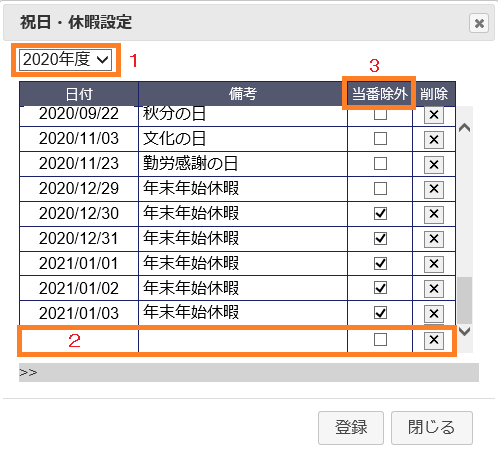
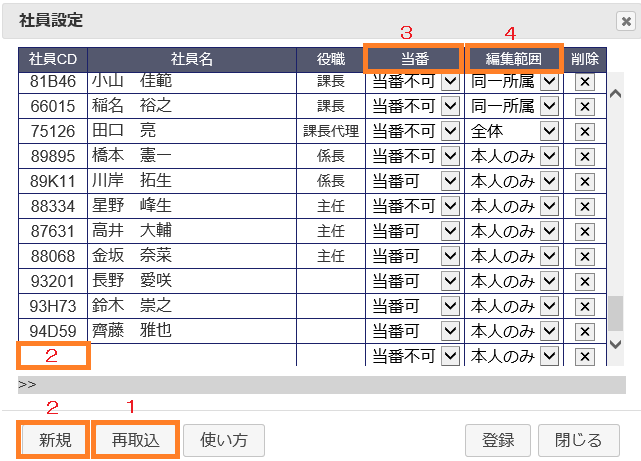
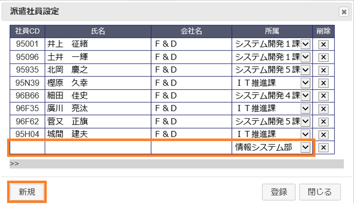
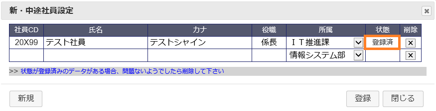

情報システム部公休予定表は下記アドレスより開いて下さい。
https://leoportal.leopalace21.com/leo-mywww/shift/
管理者が公休予定表を開くと右端に管理者メニューが表示されます。
当番割当ボタンをクリックすることで当番の割当を行います。他設定項目等と関連がありますので各設定を確認の上、実行して下さい
当番は土日祝日に割当が行われます。土日祝日で当番割当を行いたくない日は「祝日設定」で当番除外にチェックし登録して下さい
当番が割り当てられる社員は「社員設定」より設定が可能となります。
当番の割当人数は「管理者設定」の画面から変更が可能です。
確定処理ボタンをクリックすることで更新用データを確定版データへコピーします。確定することで公休予定表の確定版ボタンがクリック可能となります。
既に確定済みの場合は警告メッセージを表示し確定版データを上書きします。
祝日設定ボタンをクリックすると祝日・休暇設定画面を表示します。
① 処理日の該当年度が表示されその祝日テーブルより休祭日一覧が読込まれます。
１月～３月に開くと翌期が選択可能となり、初回開く（データが存在しない）場合は
google APIより祭日データを取得し祝日テーブルに追加後に一覧取得し読込を行います。
② 新年度初回読込時は計画年休等は無いため新規行より入力を行います。
③ 当番を割当ない休祭日の場合はチェックを付け当番割当が行われないようにします。
社員設定ボタンをクリックすると社員設定画面を表示します。
① 組織変更等により所属部署名が変更になった場合は再読込を行います。
再読込処理は「管理者設定」の情報システム部トップCDを元に社員マスタを抽出し対象社員一覧を作成します。
再読込を行った場合並び順も変わる為、並び替えが必要になります。
並び替えを行う場合は、社番をドラッグすれば行えます。
複数行同時に行う場合は氏名の欄をドラッグし選択状態になってところで社番をドラッグすれば選択した行全てを移動できます。
② 人事発令等の影響で一覧に表示されない社員は新規ボタンをクリックし社番入力を行い登録します。
③ 当番可否の設定を行います。
④ 編集範囲の設定を行います。
※組織ごと並び替えをする場合
組織ごとに並び替えをする場合は、社員と組織名の選択を行い選択した状態で社員番号をドラッグすると組織ごとの移動が可能となります。
派遣設定ボタンをクリックすると派遣社員設定画面を表示します。
・ 派遣社員は社員マスターが存在しない為、この画面で全て入力します。
新規ボタンをクリックし社番・氏名・会社名・所属（選択）を入力し登録を行います。
並び替え方法は社員設定画面と同等に可能です。
新・中途社員設定ボタンをクリックすると新・中途社員設定設定画面を表示します。
新入社員や中途社員で人事発令前には社員マスターが存在しない為、この画面から登録することで社員マスターに反映します。
登録完了後に「社員設定」が行えますので、社員設定より登録して下さい
人事発令後は状態が登録済みに変わるので、問題ないようでしたらこの画面から削除して下さい。
ボタン設定をクリックするとボタン設定画面を表示します。
ボタンとは編集Mode下にある予定入力用ボタン群の事です。
新規追加する場合新規ボタンをクリックし新規行に入力を行います。
・ タイプ(列)は３種類あり、重複G１・重複G２・通常です。重複G１のCDは０～９（１の位利用）重複G2は１０～９０（１０の位利用）で
重複G１と重複G２はスケージュールへ登録の際に結合して登録が可能となります。例えば鍵:２と当:10は登録すると12となり表示文字は鍵当となります。
通常タイプはCDが１００～となり。常に上書きされます。
・ ボタン(列)は予定登録用ボタンに表示される文字となります。
・ 表示文字(列)はスケジュールへ登録した際に表示される文字となります。
・ メモ(列)はマウスオーバー際に表示される補足文字となります。
・ 背景色(列)はスケジュール登録した際のバックカラーとなり、重複G2では利用できません
管理者設定ボタンをクリックすると管理者設定画面を表示します。
管理者設定では管理者用社員CDの管理とその他設定情報の管理を行います。
・ 社員CD欄へは管理者の社員CDをカンマ区切りで入力することで当該社員は管理者メニューを利用することが可能となります。
・ 当番CD・当番×・予備CDはボタン設定のCDを入力し、当番数は休祭日の当番割当数を入力します。
当番CD・予備CD・当番数は「当番割当処理」にて利用されます。当番×CDは「確定処理」にて利用します。
・ 情報システム部トップCDは対象社員一覧の再読込時に利用されます。
・ 集計除外は管理職計の集計に除外する社員番号を入力します。複数の場合はカンマ区切りで入力します。